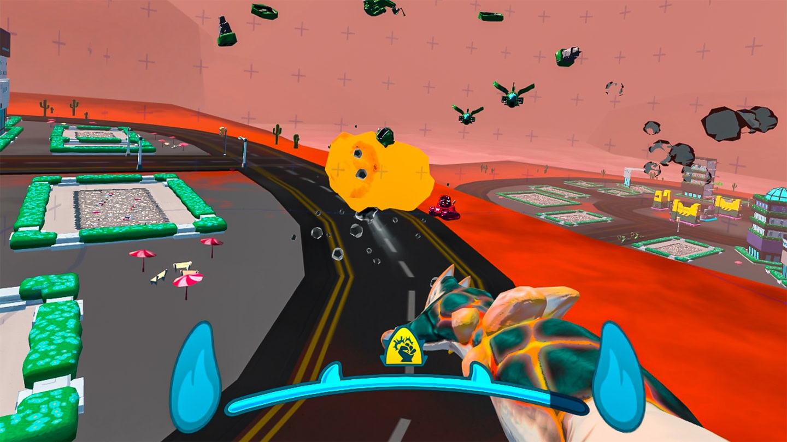

Hello, I'm Gurankas!
I am a Technical Designer.
I am a very hands-on designer possessing solid understanding of scripting and a passion for strategy games.
I enjoy contributing to rich gameplay experiences by collaborating with other disciplines to implement game mechanics and systems!My Projects
- 
Monster Simulator 3000
This was a VR Game that is to be released on the Quest store in the coming future. I worked as a Technical Designer and a Programmer for 6 months on it. Our team worked on a tight deadline with frequent milestone check in deliverables. Most of my work was done in C++.
My responsibilities
- Revamping the AI Spawners to be wave based and more performant
- Making a new and modular objective system
- Overhauled the game loop with the team to make it more fun and engaging
- Tutorialization of new game mechanics
- Influencer integration
- Optimization and lots of bug fixing

Reapers, INC
 - Outstanding Artistic Achievement
- Outstanding Artistic Achievement
Reapers, INC. is a third-person 3D Sandbox style platformer, where the player takes the role of an intern grim reaper who is assigned the task of carrying out some kills in order to fill out the year-end quota in the Death HQ. But the player cannot just go around slashing people around the town, he has to cause accidents to eliminate the people of the town and reap their souls in order to get a permanent status in the Reapers, INC. Thanks to 5mg Site indie magazine for featuring our game!
My responsibilities
- Civilian and Soul NPCs
- Player verbs
- Game Design inputs and feedback
- UI implementation
- Silhoutte system
- System Design for the accidents


Gravity Force
Gravity Force is a Portal inspired first-person puzzle game where the main gameplay ingredient is gravity. The player has to use spatial understanding and planning to reach the end of each level. But beware, you may encounter some dead ends along the way :)
My responsibilities
- Plugin integration
- Player verbs
- Game and level design direction
- Gameplay ingredients
- Documentation
Bone'o'ween
Bone’o’ween is a Metroidvania style third-person platformer about a Skeleton who has the day he has been waiting for every year, Halloween! The only night where he can go out in the wild and party with people without being feared or being looked at unearthly. But the dark world, not been kind with him, struck him with lighting, burning his body to crisp except for his head. But the Skeleton has the hope that he can find parts from other skeletons lying around the cemetery to get himself a new skeleton figure to attend the party.
My responsibilities
- Ghost AI
- Player verbs
- Gameplay ingredients
- Version Control
- Player state changes
- Saving the progress at predetermined junctions
Garbage Collector
Making Garbage Collector was a very unique, but even challenging experience than
conventional game development. Why? Because the game had to deliver a message on the theme of
“Amplifying Voices” but also be fun and engaging. This Impact Jam was organized by Games for Change
in collaboration with Unity, Embassies of France, the US and Canada.
Therefore, as our submission, we made Garbage Collector.
Apart from having programmer term Easter eggs in the game(let’s see how many you can find?) this was an
Overcooked inspired concept which encouraged the player sustainability for the planet via waste disposal
education, amplifying and personifying the voice of “Mother Nature“
My responsibilities
- Player verbs
- Level Design direction
- Modular garbage item system
- Version Control
- Game Design direction
Huge thanks to Unity and these two gentlemen who streamed their impressions of our game on Unity's official Twitch channel
Play on itch.ioSpace Landing
Space Landing is a 1 week quick prototype paying tribute to old Atari games. Try to land the ship as many times as you can before the fuel runs out on the jagged and rough terrain on the moon!
My responsibilities
- Player verbs
- Terrain implementation and parallaxing
- Win and loose conditions
- Documentation
- UI and SFX integration
Jot the Dot
Jot the Dot is a game I used to play a lot on paper when I was growing up. In term 1 of Game Design at the CEA, when we had the agency to make any game, I thought this was the appropriate project with the correct scope of things.
My responsibilities
- Runtime Game configuration
- UI implementation
- SFX
- Board Game Design
- Supporting local co-op upto 4 players
Snake
In term 1 of Game Design at the CEA, we learnt the basics of C# before diving into Unity first. When the basics were complete, we had to create a game using just the commmand prompt. I took this opportunity to recreate the beloved Snake game which I had spent numerous hours on playing on my mom's Nokia phone.
My responsibilities
- GUI on the command prompt
- Creating artificial tick to update the game UI after every iteration
- Snake movement
- world bounds generation
- growing of snake length after food consumption
- player score
- game lose condition after collision with self or boundary